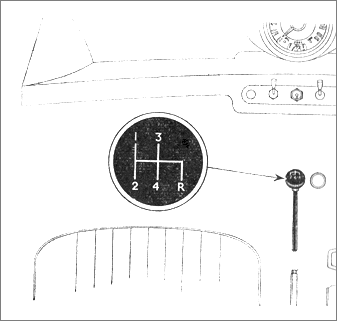

Changing gears
The gear lever is used to switch between the different gears to allow you to drive the car.
Depress the clutch foot pedal to engage a gear.
Gear lever

The lever is centrally situated and defaults to neutral gear.
From the neutral position, move the lever:
- left and forwards to select first gear.
- left and backwards to select second gear.
- forwards to select third gear.
- backwards to select fourth gear.
- right and backwards to select reverse gear.